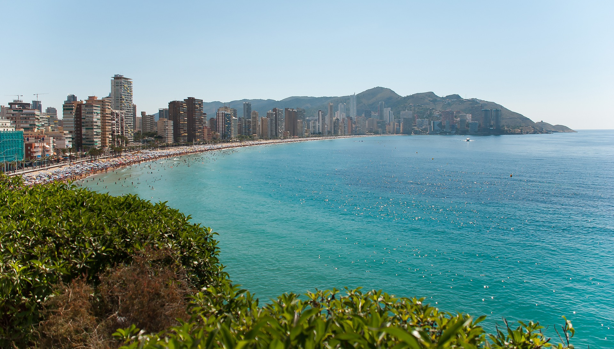
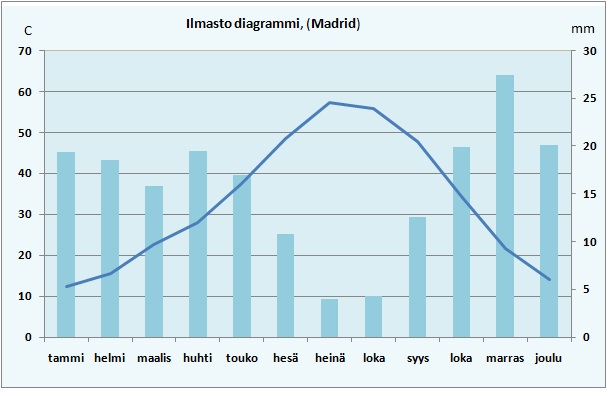
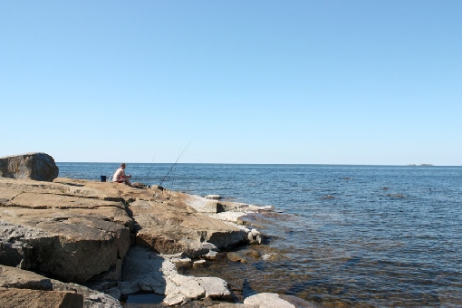
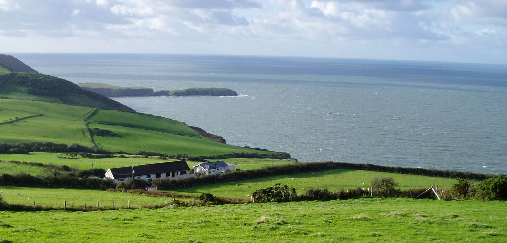

Sijainti - Samu

-
Rannikko on meren tai järven raja-alue.
-
Rannikon leveys voi olla useita kilometrejä.
Ilmasto - Veikka

-
Merten rannikoiden vesi nousee ja laskee säännöllisin väliajoin.
-
Tätä ilmiötä kutsutaan vuorovedeksi.
-
Vuorovesi aiheutuu Kuun ja Auringon vetovoiman ja maapallon pyörimisen takia.
-
Laskuveden aikana merenpinta laskee normaalia matalammalle.
-
Nousuveden aikana merenpinta nousee normaalia korkeammalle.
-
Tämän ilmiön takia taloja ei rakenneta matalalle meren rannalle.
-
Nousuveden aikaan tapahtuva myrsky nostattaa usein vaarallisen korkeita aaltoja.
-
Myrsky huuhtoo rantaa ja siirtelee hiekkaa.
-
Jäätikön sulaminen aiheuttaa merenpinnan nousua, joten rannikoilla ilmiö on pahimmillaan.
-
Ilmaston takia muuttamista kutsutaan ilmastopakolaisuudeksi.
Luonnonvarat - Veikka

-
Rannikolta löytyy paljon luonnonvaroja.
-
Luonnonvaroihin kuuluvat muun muassa kalat ja ravut.
-
Kalastus on maailmanlaajuisesti tärkeä elinkeino.
-
Kaloja on paljon pohjasta nousevien ravinteiden takia, joita nousee mannerjalustan alueella paljon.
-
Rannikon omistavalla valtiolla on oikeus käyttää oman
valtionsa mannerjalustaa.
-
Mannerjalusta on alle 200 metriä syvä merialue lähellä rantaa.
-
Mannerjalustalta löydetään kaasu- ja öljyesiintymiä.
Ympäristöongelmat - Samu
-
Väestön ja lisääntyneen väestön kasvava ravintotarve on johtanut liikakalastukseen.
-
Jos kalastusalusten kalansaaliit pysyisivät kohtuullisina myös omaan tarpeeseensa kalastaville riittäisi saalista.
Asutus - Veikka

-
Noin puolet koko maailman väestöstä asuu rannikolla.
-
Asutuksen määrä johtuu esimerkiksi rannikon soveltuvuudesta maanviljelyyn.
-
Rannikko houkuttelee paljon turisteja, sillä rannikolla on miellyttävä ilmasto ja pääsy mereen, joka sopii hyvin uimiseen ja surffaamiseen.
-
Maanviljely sujuu rannikolla hyvin laajojen suistoalueiden takia, jotka ovat ravinteikasta viljelymaata.
-
Monet suurimmista kaupungeista sijaitsevat rannikolla.
-
Hyvä meriliikenne helpottaa kaupankäyntiä.
Muistiinpanot - Samu ja Veikka
-
Rannikot ovat merten rannassa.
-
Rannikolla on paljon asukkaita merenkulun ja maanviljelyn takia.
-
Kalastus, maanviljely ja kaupankäynti ovat yleisiä elinkeinoja.
-
Vuorovesi estää matalan rannan asutuksen.